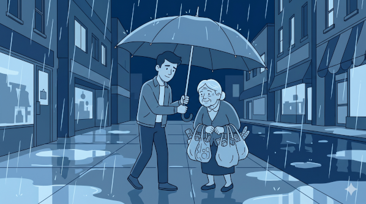
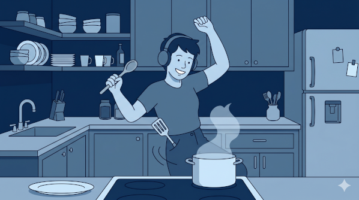
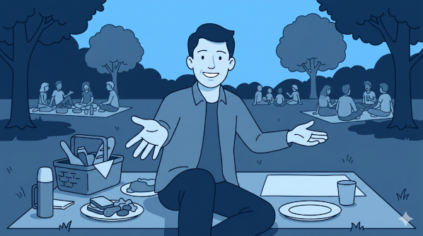
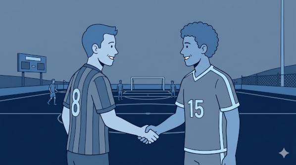

Cinco adjetivos amables que es fácil confundir — y cómo separarlos sin que se vuelvan una sola idea borrosa.
🔊 Velocidad:
Dos preguntas separan las cinco: ¿qué palabra pequeña se esconde dentro? · ¿hacia dónde apunta?
→
amable
hacia los demás
←
agradable
al que percibe
↻
alegre
desde dentro
⇢
amigable
se abre hacia fuera
⇄
amistoso
entre dos partes
amable

amable
amar (amor) → trato cálido
kind · polite · courteous
→ hacia los demás (cómo los tratas)
agradable
agradable
agradar → "to please"
pleasant · nice to be around
← recae en quien lo percibe
alegre

alegre
alegría → "joy"
cheerful · in good spirits
↻ irradia desde dentro, sin destinatario
amigable

amigable
amigo + -able → "befriend-able"
friendly · approachable
⇢ se abre hacia fuera (una invitación)
amistoso

amistoso
amistad + -oso → "full of friendship"
friendly (gesture / relation)
⇄ entre dos partes
amable
de amar / amor — gancho mnemónico (no es una traducción literal)
Sentido principal
Other-directed warmth — kind, polite, courteous. It's both a disposition (es muy amable) and something shown in how you treat people; not just a single action.
Usos clave
The courtesy-formula word: ¿sería tan amable de…? — the polite way to ask for something.
NOTA* The amar → warmth hook is a memory aid, not an etymology you should quote: amable comes from Latin amabilis ("lovable"), but its modern meaning is firmly kind / courteous, not "loving."
neutralser
Ejemplos
Fue muy amable conmigo cuando llegué.
He was very kind to me when I arrived.
¿Sería tan amable de repetirlo?
Would you be so kind as to repeat it?
agradable
de agradar (to please)
Sentido principal
The effect something has on the perceiver — pleasant, easy to be around. You don't have to do anything; it's about the experience created, the vibe, not a specific action.
Rango
Applies freely to non-people: un día agradable, un lugar agradable, un olor agradable, una conversación agradable.
NOTA* Calling a personagradable is positive but mild — pleasant company — noticeably cooler than encantador or simpático. Fine for places and things; for people it can land as faint praise.
neutralserpersonas = elogio suave
Ejemplos
Pasamos una tarde muy agradable.
We spent a very pleasant afternoon.
Es una persona agradable, fácil de tratar.
He's a pleasant person, easy to deal with.
alegre
de alegría (joy)
Sentido principal
The happiness and energy a person radiates — self-contained, needs no social target. You can be alegre completely alone.
NOTA*ser vs. estar — the one word here where it really matters. ser alegre = cheerful by nature (a trait). estar alegre = happy / in good spirits right now (a state). The other four are essentially always ser. Heads-up: estar alegre is also a mild colloquial euphemism for tipsy / buzzed, so context matters.
Rango
Stretches to things: colores alegres, música alegre, una habitación alegre — bright, lively, upbeat.
She's in great spirits today because she passed the exam.
amigable
de amigo + -able → "befriend-able"
Sentido principal (personas)
Open, welcoming, easy to approach — an outward invitation to connect. A quality of one person.
Segundo sentido (cosas / relaciones)
-friendly / amicable: una interfaz amigable, amigable con el medio ambiente.
NOTA*amigable vs. amistoso — the split that fixes the blur. amigable describes one person's openness (you're easy to approach). amistoso describes the friendship between two parties — a gesture, tone, relation, or event. Anchor fact: un partido amistoso (a friendly match) is neveramigable. Think amigo-able (you can be befriended) vs. amist-ad (the friendship that exists between you).
NOTA*En la calle (LatAm): for "a friendly person," simpático is the more everyday spoken choice; amigable is correct but a touch more formal.
neutralsercosas = -friendly
Ejemplos
El nuevo vecino es muy amigable.
The new neighbor is very friendly.
La aplicación tiene una interfaz amigable.
The app has a user-friendly interface.
amistoso
de amistad (friendship) + -oso → "full of friendship"
Sentido principal
Describes a gesture, tone, relation, or event marked by friendship / lack of hostility — the friendly arrow already drawn between two parties. Less a standing personal quality, more the character of an interaction.
Usos emblemáticos
un partido amistoso (friendly match), un gesto amistoso, un acuerdo / arreglo amistoso (amicable agreement), en términos amistosos.
NOTA* The contrast to lock in: one person's openness is amigable; the friendship between parties is amistoso. When English says a "friendly match" or an "amicable split," that's amistoso — never amigable.